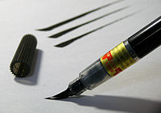
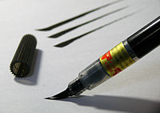

For other uses, see Pen (disambiguation), Pens (disambiguation), and PEN (disambiguation). For the comic, see Ink Pen.
A pen is a common writing instrument that applies ink to a surface, usually paper, for writing or drawing.[1] Early pens such as reed pens, quill pens, dip pens and ruling pens held a small amount of ink on a nib or in a small void or cavity which had to be periodically recharged by dipping the tip of the pen into an inkwell.[2][3] Today, such pens find only a small number of specialized uses, such as in illustration and calligraphy. Reed pens, quill pens and dip pens, which were used for writing, have been replaced by ballpoint pens, rollerball pens, fountain pens and felt or ceramic tip pens.[4] Ruling pens, which were used for technical drawing and cartography, have been replaced by technical pens such as the Rapidograph.[5] All of these modern pens contain internal ink reservoirs, such that they do not need to be dipped in ink while writing.[6]
Types
Modern

Pens commonly used today can be categorized based on the mechanism of the writing tip and the type of ink:
- A ballpoint pen dispenses a viscous oil-based ink by means of a small hard sphere, or ball, which rolls over the surface being written on. The ball is held captive in a socket at the tip of the pen with one half exposed and the other half immersed in ink from the pen's reservoir. When the ball rotates, it transfers the ink - which wets the ball - from the reservoir to the external surface. The ball is typically under a millimeter in diameter and made of brass, steel, or tungsten carbide.[7] The ink, due to its high viscosity, does not permeate through paper and does not leave the tip of the pen by capillary action. As such, a bare minimum amount of ink is dispensed, with the result that the writing dries almost instantly and ink lasts longer than it does in other types of pen. Ballpoint pens are reliable, versatile and robust, and are available for a very wide range of prices. They have replaced fountain pens as the most common tool for everyday writing.
- A gel pen works similarly to a ballpoint pen, in that it dispenses ink using a rolling ball held in the writing tip. However, unlike oil-based ballpoint pen ink, gel pen ink consists of a water-based gel[8] that has a pigment suspended in it. Because the ink is thick and opaque, it shows up more clearly on dark or slick surfaces than the typical inks used in ballpoint or felt tip pens. Gel pens can be used for many types of writing and illustration. Since the gel medium eliminates the constraints of a soluble dye, many new colors are made possible, as well as some special types of ink; gel pens are available in a wide range of vibrant or saturated colors, in pastel colors, in neon colors, in metallic colors, in glitter inks, in glow-in-the-dark ink, and so on.
- A rollerball pen is a pen that dispenses a water-based ink through a ball tip similar to that of a ballpoint pen. As such, gel pens might be considered a subcategory of rollerball pens; however, due to the widespread knowledge and use of the term 'gel pen', 'rollerball' is in practice typically reserved for pens which use liquid ink.[9] The lower viscosity of rollerball ink compared to oil-based ballpoint pen ink has several effects on the pen's performance. Since the ink flows more easily and is more easily absorbed into paper, more ink is dispensed in general. This changes the writing experience by lubricating the motion of the tip over the paper. It also results in a solid and uninterrupted line, since the diffusion of the ink through the paper fills small gaps that might otherwise be left by the ball point. Compared to ballpoint pens, which dispense a smaller amount of more viscous ink, the writing by a rollerball pen takes longer to dry on the page and can seep through thin paper such as to become visible on the opposite side. When the tip of a rollerball pen is held against paper, ink leaves the tip continually by capillary action in much the same way as would occur with a fountain pen. This can lead to ink blots or smears. The rollerball pen was initially designed to combine the convenience of a ballpoint pen with the smooth "wet ink" effect of a fountain pen. Refillable rollerball pens have recently become available; these generally use cartridges of fountain pen ink.
- A fountain pen uses water-based liquid ink delivered through a nib , which is in general a flat piece of metal with a thin slit extending inwards from the writing tip.[10] Driven by gravity, the ink flows from a reservoir to the nib through a feed, which is in general a specially shaped solid block of material with channels and grooves cut into it. The feed delivers the ink to the slit in the nib. While writing, ink is pulled out of this slit by capillary action. A fountain pen nib, unlike the tip of a ballpoint, gel or rollerball pen, has no moving parts. A fountain pen reservoir can be refillable or disposable; the disposable type is called an ink cartridge. A pen with a refillable reservoir may have a mechanism such as a piston to draw ink from a bottle through the nib, or it may require refilling with an eye dropper. Refillable reservoirs, also known as cartridge converters, are available for some pens otherwise designed to use disposable cartridges. A fountain pen can be used with permanent or non-permanent inks.
- A felt-tip pen, or marker, has a porous tip made of fibrous material, which normally remains saturated with ink from the reservoir.[11] As ink leaves the tip, new ink is drawn from the reservoir - which often consists of a large volume of a similar porous material to that used in the tip - by capillary action and gravity. As with a fountain pen, ink leaves the tip of a felt tip pen by capillary action when writing on a porous surface. However, unlike fountain pens, many markers can also reliably write on slick impermeable surfaces that are wet by the ink, and in such applications ink typically does not continually leave the pen as it is held against the writing surface. The smallest, finest-tipped felt-tip pens are used for writing on paper. Medium-sized felt-tips are often used by children for coloring and drawing. Larger types, often called "markers", are used for writing in larger sizes, often on surfaces other than paper such as corrugated boxes and whiteboards. Specialized felt-tip pens referred to by names such as "liquid chalk" or "chalkboard markers" are used to write on chalkboards. Markers with wide tips and bright but transparent ink, called highlighters , are used to highlight text that has already been written or printed. Pens designed for children or for temporary writing (as with a whiteboard or overhead projector) typically use non-permanent inks. Large markers used to label shipping cases or other packages are usually permanent markers.
- A brush pen is a pen whose writing tip consists of a small brush fed with ink from a liquid ink reservoir similar to those used in fountain pens and rollerball pens.[12] Brush pens might be either refillable or disposable, and might use either water-based or waterproof ink. The most significant functional difference of brush pens from felt-tip pens is the far greater compliance of the tip. Brush pens are an obvious alternative to ink brushes for Chinese calligraphy and Japanese calligraphy, but are now also commonly used in other forms of calligraphy and by artists such as illustrators and cartoonists. The primary appeal of these pens to such artists is that they allow a great deal of line width variation in response to small changes in applied pressure.
- A stylus pen, plural styli or styluses,[13] is a writing utensil which does not use ink, but rather makes marks primarily by creating scratches or indentations in the writing surface. As such, the tip often consists simply of a sharp metal point. Such tools are also used for other types of marking than writing, and for shaping or carving in, for example, pottery. The word stylus also refers to a pen-shaped computer accessory that is used to achieve greater precision when using touchscreens than generally possible with a fingertip. There are products available that combine a ballpoint tip at one end and a touchscreen stylus at the other.
 


Historic
These historic types of pens are no longer in common use as writing instruments, but may be used by calligraphers and other artists:
- A dip pen (or nib pen) consists of a metal nib with capillary channels, like that of a fountain pen, mounted on a handle or holder, often made of wood. A dip pen is called such because it usually has no ink reservoir and must therefore be repeatedly dipped into an inkpot in order to recharge the nib with ink while drawing or writing. The dip pen has certain advantages over a fountain pen; it can use waterproof pigmented (particle-and-binder-based) inks, such as so-called India ink , drawing ink, or acrylic inks, which would destroy a fountain pen by clogging, as well as the traditional iron gall ink, which can cause corrosion in a fountain pen. Dip pens are now mainly used in illustration, calligraphy, and comics. A particularly fine-pointed type of dip pen known as a crowquill is a favorite instrument of artists such as David Stone Martin and Jay Lynch, because its flexible metal point can create a variety of delicate lines, textures and tones in response to variation of pressure while drawing.
- The ink brush is the traditional writing implement in East Asian calligraphy. The body of the brush can be made from bamboo, or from rarer materials such as red sandalwood, glass, ivory, silver, and gold. The head of the brush can be made from the hair (or feathers) of a wide variety of animals, including the weasel, rabbit, deer, chicken, duck, goat, pig, and tiger. There is also a tradition both in China and in Japan of making a brush using the hair of a newborn, as a once-in-a-lifetime souvenir for the child. This practice is associated with the legend of an ancient Chinese scholar who ranked first in the Imperial examinations using such a personalized brush. Calligraphy brushes are widely considered an extension of the calligrapher's arm. Today, calligraphy may also be done using a pen, but pen calligraphy does not enjoy the same prestige as traditional brush calligraphy.
- A quill is a pen made from a flight feather of a large bird, most often a goose. To make a quill, a feather must be cured through aging or heat-treatment, after which a nib is fashioned from the shaft by cutting a slit in it and carving away the sides to create a pointed tip. With practice, suitable feathers can be made into quills quickly and cheaply using no more than a small knife and a source of heat. Due to their easy availability, quills remained the writing instruments of choice in the west for a long time—from the 6th century to the 19th—before the metal dip pen, the fountain pen, and eventually the ballpoint pen came to be manufactured in large numbers. Quills, like later metal-nibbed dip pens, must periodically be dipped in ink while writing.
- A reed pen is cut from a reed or bamboo, with a slit in a narrow tip. Its mechanism is essentially the same as that of a quill or a metal dip pen. The reed pen has almost disappeared but is still used by young school students in some parts of India and Pakistan, who learn to write with them on small timber boards known as "Takhti".[14]
History

Ancient Egyptians had developed writing on papyrus scrolls when scribes used thin reed brushes or reed pens from the Juncus maritimus or sea rush.[15] In his book A History of Writing, Steven Roger Fischer suggests, on the basis of finds at Saqqara, that the reed pen might well have been used for writing on parchment as long ago as the First Dynasty, or around 3000 BC. Reed pens continued to be used until the Middle Ages, but were slowly replaced by quills from about the 7th century. The reed pen, made from reed or bamboo, is still used in some parts of Pakistan by young students and is used to write on small wooden boards.[14][16]
The reed pen survived until papyrus was replaced as a writing surface by animal skins, vellum and parchment. The smoother surface of skin allowed finer, smaller writing with a quill pen, derived from the flight feather.[17] The quill pen was used in Qumran, Judea to write some of the Dead Sea Scrolls, which date back to around 100 BC. The scrolls were written in Hebrew dialects with bird feathers or quills. There is a specific reference to quills in the writings of St. Isidore of Seville in the 7th century.[18] Quill pens were still widely used in the eighteenth century, and were used to write and sign the Constitution of the United States in 1787.
A copper nib was found in the ruins of Pompeii, showing that metal nibs were used in the year 79.[19] There is also a reference to 'a silver pen to carry ink in', in Samuel Pepys' diary for August 1663.[20] 'New invented' metal pens are advertised in The Times in 1792.[21] [full citation needed] A metal pen point was patented in 1803, but the patent was not commercially exploited. A patent for the manufacture of metal pens was advertised for sale by Bryan Donkin in 1811.[22] [full citation needed] John Mitchell of Birmingham started to mass-produce pens with metal nibs in 1822, and after that, the quality of steel nibs improved enough so that dip pens with metal nibs came into general use.[23] [full citation needed]
The earliest historical record of a pen with a reservoir dates back to the 10th century AD. In 953, Ma'ād al-Mu'izz, the Fatimid Caliph of Egypt, demanded a pen which would not stain his hands or clothes, and was provided with a pen which held ink in a reservoir and delivered it to the nib.[24] This pen may have been a fountain pen, but its mechanism remains unknown, and only one record mentioning it has been found. A later reservoir pen was developed in 1636. In his Deliciae Physico-Mathematicae (1636), German inventor Daniel Schwenter described a pen made from two quills. One quill served as a reservoir for ink inside the other quill. The ink was sealed inside the quill with cork. Ink was squeezed through a small hole to the writing point. In 1809, Bartholomew Folsch received a patent in England for a pen with an ink reservoir.[24]
A student in Paris, Romanian Petrache Poenaru invented a fountain pen that used a quill as an ink reservoir. The French Government patented this in May 1827.[25] Fountain pen patents and production then increased in the 1850s.
The first patent on a ballpoint pen was issued on October 30, 1888, to John J Loud.[26] In 1938, László Bíró, a Hungarian newspaper editor, with the help of his brother George, a chemist, began to design new types of pens, including one with a tiny ball in its tip that was free to turn in a socket. As the pen moved along the paper, the ball rotated, picking up ink from the ink cartridge and leaving it on the paper. Bíró filed a British patent on June 15, 1938. In 1940, the Bíró brothers and a friend, Juan Jorge Meyne, moved to Argentina, fleeing Nazi Germany. On June 17, 1943, they filed for another patent.[27] They formed "Bíró Pens of Argentina", and by the summer of 1943, the first commercial models were available.[28] Erasable ballpoint pens were introduced by Paper Mate in 1979, when the Erasermate was put on the market.
Slavoljub Eduard Penkala, a Croatian engineer and inventor, became renowned for further development of the mechanical pencil (1906) – then called an "automatic pencil" – and the first solid-ink fountain pen (1907). Collaborating with the Croatian entrepreneur Edmund Moster, he started the Penkala-Moster Company and built a pen-and-pencil factory that was one of the biggest in the world at the time. This company, now called TOZ-Penkala , still exists today. "TOZ" stands for "Tvornica olovaka Zagreb" , meaning "Zagreb Pencil Factory".
In the 1960s, the fiber- or felt-tipped pen was invented by Yukio Horie of the Tokyo Stationery Company, Japan.[29] Paper Mate's Flair was among the first felt-tip pens to hit the U.S. market in the 1960s, and it has been the leader ever since. Marker pens and highlighters, both similar to felt pens, have become popular in recent times.
Rollerball pens were introduced in the early 1970s. They use a mobile ball and liquid ink to produce a smoother line. Technological advances during the late 1980s and early 1990s have improved the roller ball's overall performance. A porous point pen contains a point made of some porous material such as felt or ceramic. A high quality drafting pen will usually have a ceramic tip, since this wears well and does not broaden when pressure is applied while writing.
Although the invention of the typewriter and personal computer with the keyboard input method has offered another way to write, the pen is still the main means of writing.[30] Many people like to use expensive types and brands of pens, including fountain pens, and these are sometimes regarded as a status symbol.[31
See also
References
- Pen Archived 2021-10-06 at the Wayback Machine. Merriam-Webster Dictionary
- Johannessen, Christian Mosbæk; Leeuwen, Theo van (2017-09-18). The Materiality of Writing: A Trace Making Perspective. Routledge. ISBN 978-1-134-98646-0.
- Greetham, David C. (2015-10-28). Textual Scholarship: An Introduction. Routledge. ISBN 978-1-136-75579-8.
- "pen." Word Histories and Mysteries. Boston: Houghton Mifflin, 2004. Credo Reference. Web. 13 September 2007.
- Emmons, Paul (2019-04-01). Drawing Imagining Building: Embodiment in Architectural Design Practices. Routledge. ISBN 978-1-317-17952-8.
- Silva, Patricia; Pauli, Erika (2009). Modern Times. Marshall Cavendish. ISBN 978-0-7614-4322-3.
- "How does a ballpoint pen work?". Engineering. HowStuffWorks. 1998–2007. Archived from the original on 2018-12-25. Retrieved 2007-11-16.
- Schwartz, Debra A. (September 2001). "The Last Word: Just for the gel of it". Chemical Innovation. 31 (9): IBC. Archived from the original on 2020-07-15. Retrieved 2018-04-08.
- Florey, Kitty Burns (2013-10-08). Script and Scribble: The Rise and Fall of Handwriting. Melville House. ISBN 978-1-61219-305-2.
- Lambrou, Andreas (1989). Fountain Pens: Vintage and Modern. Sotheby's Publications. ISBN 978-0-85667-362-7.
- Sgamellotti, Antonio; Brunetti, Brunetto Giovanni; Miliani, Costanza (2020-07-01). Science and Art: The Contemporary Painted Surface. Royal Society of Chemistry. ISBN 978-1-78801-469-4.
- Stephenson, Jonathan (1987). Graphic Design Materials & Equipment: An International Directory. Chartwell Books. ISBN 978-1-55521-078-6.
- "Stylus - Define Stylus at Dictionary.com". Dictionary.com. Archived from the original on 2016-03-04. Retrieved 2018-04-08.
- Farah, Iffat (1991-10-01). "School ka sabaq: Literacy in a girls' primary school in rural Pakistan". Working Papers in Educational Linguistics (WPEL). 7 (2). ISSN 1548-3134. Archived from the original on 2021-11-04. Retrieved 2021-08-01.
- Egyptian reed pen Archived 2007-02-21 at the Wayback Machine Retrieved March 16, 2007.
- "Evolution of pen - From Reed Pen to 3Doodler - Spinfold". www.spinfold.com. April 2013. Archived from the original on 2021-05-01. Retrieved 2017-11-30.
- "pen." The Hutchinson Unabridged Encyclopedia with Atlas and Weather guide. Abington: Helicon, 2010. Credo Reference. Web. 17 September 2012
- The Etymologies of Isidore of Seville Archived 2021-07-28 at the Wayback Machine, Cambridge Catalogue Retrieved March 11, 2007.
- Arnold Wagner – Dip Pens Archived 2019-03-28 at the Wayback Machine. Retrieved March 11, 2007.
- 'This evening came a letter about business from Mr Coventry, and with it a silver pen to carry inke in, which is very necessary.' Diary of Samuel Pepys, 5 August 1663:http://www.pepysdiary.com/archive/1663/08/ Archived 2012-10-19 at the Wayback Machine
- The advertisement implies metal nibs had been in use for some years, but had not been generally accepted due to lack of flexibility and tendency to rust. It refers to 'Ivory Handles' with 'Gold Silver or Steel Pens to each', and says that 'new pens may be fitted in at pleasure', indicating that only the nibs were metal. It also claims the pens have 'well-tempered Elasticity' and that the 'Steel Points' are treated to be rustproof, rust being 'a circumstance that has been long and universally complained of in this article'. The Times. London. 8 June 1792. p. 4. {{cite news}}: Missing or empty |title= (help)
- He offered the patent, which had an unexpired term of 11 years, for sale together with the 'utensils peculiarly adapted to the manufacturing' of the metal pens: The Times. London. 15 August 1811. p. 4. {{cite news}}: Missing or empty |title= (help)
- In 1832 a woman accused of stealing a silver pen from a London shop said in her defence that she had 'one of the common metal pens' with her: The Times. London. 15 September 1832. p. 3. {{cite news}}: Missing or empty |title= (help)
- Bosworth, C. E. (Autumn 1981), "A Mediaeval Islamic Prototype of the Fountain Pen?", Journal of Semitic Studies , XXVI (i)
- Pierre Poyenar, "Plume sans fin portative, s'alimentant d'encre d'elle même" Patent FR-Poenaru, Application 3208. File: http://www.fountainpen.it/File:Patent-FR-Poenaru.pdf Archived 2021-08-31 at the Wayback Machine
- GB Patent No. 15630, October 30, 1888
- [1], "Writing instrument", issued 1943-06-17 Archived 2021-08-01 at the Wayback Machine
- The Ballpoint Pen Archived 2007-04-17 at the Wayback Machine, Quido Magazin. Retrieved March 11, 2007.
- History of Pens & Writing Instruments [permanent dead link] , About Inventors site. Retrieved March 11, 2007.
- "Losing touch with paper and pen". Rediff.com . 2003-05-05. Archived from the original on 2013-05-12. Retrieved 2013-05-03.
- Guilfoil, John M. (August 17, 2008) The power of the pen Archived 2016-03-05 at the Wayback Machine. Boston.com
External links
- Writing Instrument Manufacturers Association